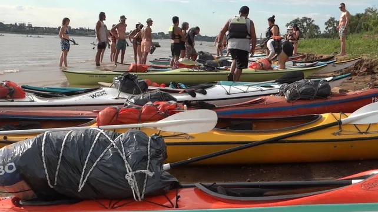
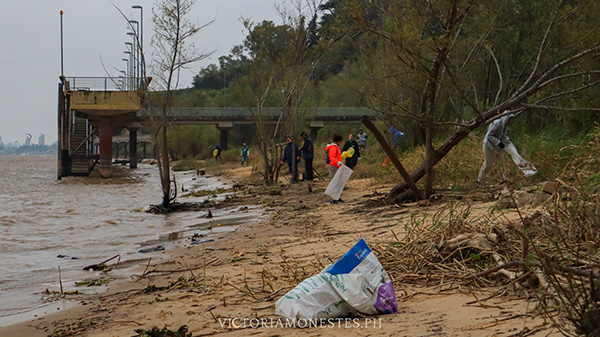
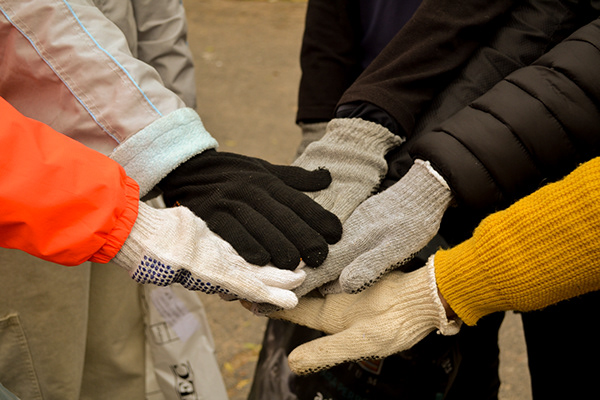
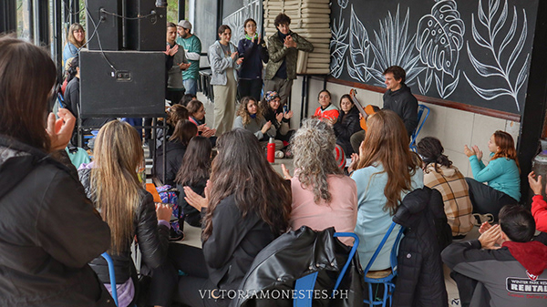
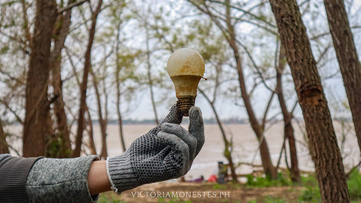
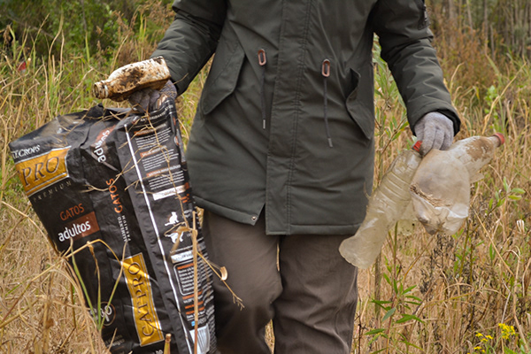
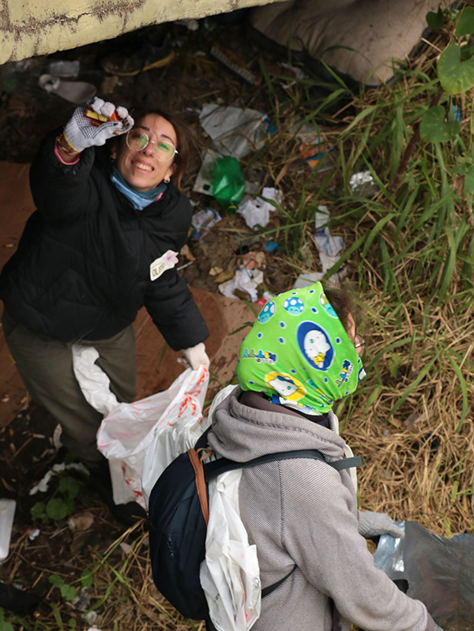

Limpieza costera en Isla la Invernada (2024)
Intervención inicial de saneamiento ambiental abordando directamente la acumulación de residuos en territorio insular mediante el despliegue de kayakistas voluntarios.
La Voz del Río nace como una respuesta de acción directa ante la acumulación de plásticos y residuos en el ecosistema del río Paraná. Esta iniciativa trasciende la mera recolección para convertirse en una jornada integral donde la comunidad se reapropia de las costas, tanto continentales como insulares.
El proyecto aborda la problemática ambiental desde una perspectiva multidisciplinaria: combina el esfuerzo físico del saneamiento náutico con la promoción de la cultura ribereña y la economía circular local. Es un espacio para visibilizar el impacto antrópico en el humedal, demostrando que el vínculo con el río implica una responsabilidad activa en su cuidado y preservación.

Intervención inicial de saneamiento ambiental abordando directamente la acumulación de residuos en territorio insular mediante el despliegue de kayakistas voluntarios.

Acción de impacto en la ribera continental, saneando la costa y visibilizando ante la comunidad el volumen de residuos urbanos que terminan en el curso de agua.

Integración de la economía regional como pilar del cuidado ambiental. Un espacio para potenciar proyectos sustentables que dialogan en armonía con el ecosistema.

Cierre cultural diseñado para reconectar emocionalmente con la identidad ribereña, celebrando el trabajo colectivo de defensa y valoración del territorio. Artista invitado: Agustín Turdó.




"Kayakistas buscan retomar un viejo hábito: limpiar las orillas del río Paraná y las islas. La iniciativa busca generar conciencia sobre la cantidad de plásticos que contaminan el curso de agua [...] El río se llena de gente que lo disfruta, pero con ese uso suele llegar el residuo. La propuesta apunta a cambiar la mirada y pasar a la acción."
— Extracto analítico del diario La Capital
Leer nota completa